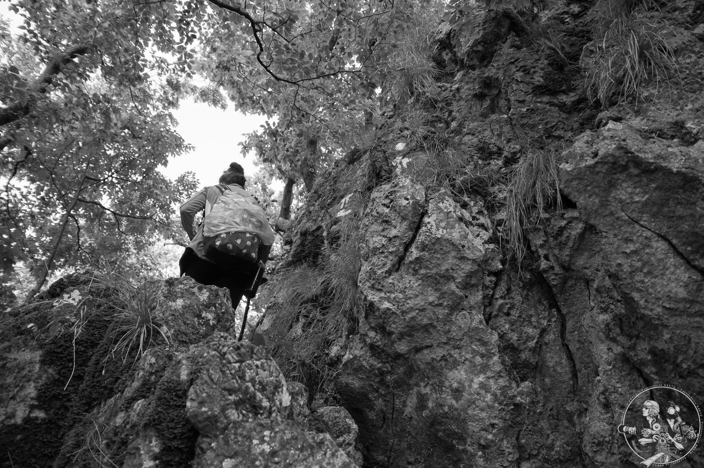

Projekti
Savez studenata FER-a je neprofitna volonterska udruga koja djeluje u prostoru Kluba studenata elektrotehnike (KSET) već više od 40 godina. Kroz taj dugi niz godina razvija razne projekte, a na ovoj stranici možete vidjeti samo neke od njih.
Više o Klubu i svim projektima možete saznati u portfoliju.
Svi projekti provode članovi Udruge koji su studenti i volonteri.
Job Fair
Projekt je namijenjen povezivanju poslodavaca i studenata FER-a te srodnih tehničkih fakulteta s ciljem prezentacije poduzeća i pružanja uvida studentima u mogućnosti zapošljavanja i razvoja karijere. Job Faira olakšava studentima put do što kvalitetnijeg zaposlenja, a tvrtkama omogućiti lakše umrežavanje sa budućih zaposlenika. Projekt se od 2016. godine provodi u suradnji s FER-om i Centrom karijera FER-a.
Više o Job Fairu moguće je pronaći na službenoj stranici: jobfair.fer.hr.

Svjetski elektroplaninarski pješački rally
Rally je događaj sportsko-zabavnog karaktera koji okuplja studente, asistente i profesore kroz cjelodnevno planinarsko iskustvo začinjeno igrama i zagonetkama. Rally ima tradiciju održavanja koja se proteže od 1976. g. uz prekid održavanja tijekom Domovinskog rata. Rally je spoj ugodnog druženja, ne prenapornog planinarenja na atraktivnim lokacijama, orijentacije u prirodi, šaljivih i poučnih pitanja iz opće kulture, elektrotehnike, matematike, ekologije, biologije i sličnih znanosti, igara “bez granica” te večernje zabave s objavom rezultata i dodjelom diploma i nagrada najuspješnijim ekipama.
U sklopu Rallya osvojeni su prethodnih godina Plešivica, Humka, Skradski vrh, Sveta Gera itd.
Brucošijada FER-a
Brucošijada FER-a se tradicionalno održava toliko dugo da u KSET-u trenutno ne postoje članovi koji bi sa sigurnošću znali reći kada je bila prva. Uvijek uključuju 5 podija, svaki sa svojim pravcem glazbe kako bi mogli najbolje pokriti različite glazbene ukuse naše publike.
Mnogi danas poznati bendovi svoje su prve velike nastupe održali na Brucošijadi FER-a kao Hladno Pivo, TBF, Edo Majka, Toni Cetinski, Darko Rundek, Let 3, Leb i Sol, Urban, Gibonni, Stjepan Jimmy Stanić. Ove godine nastavljamo tradiciju pružanja prilike mladim, perspektivnim bendovima iz Hrvatske i svijeta kao i nekim već proslavljenim bendovima.
Novosti u vezi nadolazeće Brucošijade moguće je pronađi na brucosijada.kset.org.
Tech Talk
Serija predavanja koja se održava tijekom cijele akademske godine u samostalnoj organizaciji, ali i često u suradnji s tvrtkama. Kroz interaktivan način, studenti imaju priliku upoznati se s najnovijim tehnologijama te steći potrebno znanje i vještine koje su potrebne na njihovim budućim radnim mjestima. Također, tvrtke imaju priliku za predstavljanje svog načina rada i detaljnije upoznati studente, kao svoje buduće zaposlenike, sa svojim proizvodima i njihovim načinom izrade.


Fototečaj
Tečaj fotografije za početnike organiziran od strane Foto sekcije KSET-a. Sastoji se od dva dijela: teorijskog i praktičnog. Teorijski dio pokriva praktične osnove fotografije (osnove fotoaparata, ekspozicija, blenda, filmovi i filtri), mehaniku fotoaparata i optički dizajn objektiva, tehnički elementi fotografije, rad s fotografskom opremom, građu i podjelu filmova te rad u tamnoj komori (razvijanje negativa i pozitiva). U praktičnom dijelu polaznici imaju priliku u praksi primijeniti naučeno te uz iskusne fotografe na individualnoj bazi fotografiraju i u tamnoj komori razvijaju i izrađuju vlastite fotografije.
Planinarska školica
Školica organizirana od strane Planinarske sekcije KSET-a namijenjena je za studente, asistente i profesore. Obuhvaća teorijski i terenski dio, od kojih se teorijski odvija u prostoru KSET-a, a terenski na planinama Hrvatske. Školica polaznicima pruža osnovna znanja i vještine potrebne za sigurno i odgovorno planinarenje, očuvanje okoliša te sportsku rekreaciju. Planinarsku školu vode iskusni planinari planinarske sekcije KSET-a, članovi Saveza izviđača Hrvatske, članovi Hrvatskog planinarskog društva Željezničar i članovi Planinarskog društva Sveučilišta Velebita.

{kind=link}
{kind=link}
{kind=link}
{kind=link}
{kind=link}
{kind=link}
{kind=link}
{kind=link}
Čuješ?!
Čuješ?! je program kojim se želi dati priliku nastupa i promocije manje afirmiranim, ali izrazito kvalitetnim bendova iz cijele Hrvatske koji zbog okupiranosti medija mainstream glazbom nezasluženo ne dobivaju dovoljno medijske pažnje, pa je samim tim i interes publike za njima manji. Sukladno tome zatvaraju im se i mnoga mjesta za nastup koja se vode isključivo financijskom dobiti. Program stavlja naglasak na kvalitetu izvođača s ciljem da u konačnici ostvari pozitivnu nulu, a da s druge strane izvođači dobiju minimalno potrebne uvjete da bi mogli dići na nastup u vidu smještaja, akomodacije i putnih troškova.
{kind=link}
{kind=link}
Zavod za eksperimentalni zvuk
Zavod za eksperimentalni zvuk je program posvećenoj avangardnoj glazbi s naglaskom na eksperimentalni jazz. Jazz je jedna od osnovica suvremene glazbene umjetnosti i njegov utjecaj je nemjerljiv, prelijevajući se u sve suvremene glazbene pravce. Kroz godine jazz je razvio bogatstvo podžanrova i kao takav ostavio utjecaj na kulturni pejzaž svakog europskog kulturnog središta. KSET je oduvijek bio mjesto koje je promovirao jazz kao standard urbane kulture, a poslužio je i kao inkubator u kojem su se razvili značajni kulturni festivali. Primarni cilj je stvoriti studentsku publiku ove glazbe koja se nalazi van formata radio postaja, ali i van formata zabavne i kulturne ponude u Zagrebu.
Od proljeća 2018., ZEZ je evoluirao u formu festivala gdje, u tjedan dana, otvara svoja vrata i nudi svoje čari kroz razne radionice, koncerte te, već poznat sadržaj ZEZ-a, izložbe zvuka. Jedni od renomiranih glazbenika koji su stupili na pozornicu KSET-a te razdragali publiku su već redovni gost ZEZ-a, Colin Stetson sa svojim bendom Ex Eye, The Magickal WoW Band, Jasss, Živa Muzika, Eric Chenaux, Širom te mnogi drugi.

{kind=link}
FER Open Air
FER Open Air je jednodnevni, besplatni glazbeni festival koji se održava u ljetnom periodu na parkirnom prostoru pored FER-a. Radi se o projektu orijentiranom prema alternativnoj glazbi koji za cilj ima okupljanje studenata i mladih u svrhu promicanja i obogaćivanja kulturne, odnosno glazbene ponude grada Zagreba. To podrazumijeva poticanje i inspiriranje aktivnijeg, ali i slobodnijeg kulturnog djelovanja mladih na području Zagreba što se postiže činjenicom da iza projekata stoje njihovi vršnjaci i kolege studenti.
{kind=link}
{kind=link}
PowerTrip
PowerTrip je stručno putovanje studenata s ciljem upoznavanja postrojenja za proizvodnju električne energije. Ciljana populacija su primarno studenti elektroenergetike na Fakultetu elektrotehnike i računarstva kojima ovi posjeti omogućuju produbljivanje znanja stečenog na fakultetu, ali i svim drugim studentima zagrebačkog Sveučilišta koje zanimaju procesi pretvorbe energije. To je studentima energetike prilika za upoznavanje mogućih radnih mjesta, a studentima tehničkih fakulteta može biti razlog za opredjeljenje za energetiku, dok svima ostalim upoznavanje s dijelom svijeta čije važnosti možda nisu u potpunosti svjesni.
{kind=link}
{kind=link}